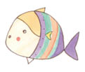
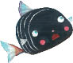

“İstediğinizi yaptık efendim, Küçük Kara Balık’ı öldürdük!”
“Aferin size!” demiş pelikan, pis pis gülerek. “Mükemmel bir iş becerdiniz, ben de şimdi sizi ödüllendireceğim!” Şöyle bir durmuş, sonra da sevinçli bir sesle, “Ödül olarak hepinizi canlı canlı yutacağım!” demiş. Der demez de minik balıkların hepsini birden midesine indirivermiş!
Bunu gören Küçük Kara Balık hızla kamasını çekmiş, pelikanın torbalı gagasının dibini baştan başa yarmış. Küçük Kara Balık ırmağın içine atlarken arkasından pelikanın korkunç çığlıklar attığını, kendisinin arkasından koşarken koca ayaklarıyla suları şapırdattığını duymuş. Ama Küçük Kara Balık hiç yüzmediği kadar hızlı yüzmüş ve çok geçmeden de pelikandan kurtulmuş.
Öğlen olmuş. Küçük Kara Balık yüzmüş de yüzmüş, yüzmüş de yüzmüş; sonunda ırmak geniş bir düzlüğe erişmiş. Sağdan soldan gelen küçük akarsular ırmağa katılıyormuş, sular o kadar çoğalmış ki Küçük Kara Balık çok geçmeden yolunu kaybetmiş.

Birdenbire karşısında bir kılıçbalığı görmüş, çok korkmuş, ama ondan kaçmayı başarıp hızla suyun yüzüne çıkmış. Çevrede hiçbir şey göremeyince yeniden suya dalmış, derinlere inmiş, orada bir balık sürüsüyle karşılaşmış. Onları selamlayıp,
“Özür dilerim,” demiş, “buraların yabancısıyım. Çok uzaklardan geldim. Buranın adı ne acaba?”
İçlerinden biri onu yanıtlamış:
“Denize hoş geldin, arkadaş.”
Bir başkası da şöyle demiş:
“Bataklıklara akanlar dışında bütün ırmaklar, bütün dereler buraya akar.”
Bu sözleri duyan Küçük Kara Balık sevincinden kabına sığamamış.
“Gidip azıcık yüzeyim,” demiş. “Sonra dönüp size katılırım. Balıkçılar ağlarını çekip götürürken sizin yanınızda olmak istiyorum!”
“Dileğinin gerçekleşmesi için fazla beklemeyeceksin,” demiş bir balık. “Ama balıkçıl kuşuna dikkat et. Eline düşecek olursan kurtulamazsın. Üç, dört balık yakalamadan bizi rahat bırakmaz!”
Onlara teşekkür eden Küçük Kara Balık yanlarından ayrılmış. Suyun yüzeyine yükselmiş, Güneş’in yavaş yavaş sırtını ısıttığını hissetmiş. Kendi kendine,
“Ölümle her an burun buruna gelebilirim,” demiş. “Yaşadığım sürece onun işini engellemek için elimden geleni yapacağım. Kuşkusuz, ölümden kaçamayacağımı anladığımda artık gözümde önemini yitirir o, önemsiz olur. Önemli olan benim yaşamımın ya da benim ölümümün başkalarını nasıl etkileyeceğidir...”

Bu düşünceler, dikkatini dağıtmış, öyle ki üzerine saldıran balıkçılı çok geç fark etmiş, fark ettiğinde de iş işten
geçmiş. Ne kadar çabalarsa çabalasın kendini acımasızca içine alan gagadan kurtulamıyormuş. Öylesine sıkı yakalamış ki balıkçıl onu, Küçük Kara Balık bayılacak gibi olmuş. Suyun dışında ne kadar canlı kalabilirim ki, çok geçmeden ölürüm, diye düşünüyormuş. Hatta balıkçıl beni yutsa diye dua etmeye bile başlamış. Böylece onun karnındaki suyun içindeyken birkaç dakika daha yaşayabileceğini düşünmüş. Bunu düşününce balıkçıla,
“Beni hemen yutsana,” demiş, “ben öyle bir balığım ki ölür ölmez bedenim zehir dolar.”
Balıkçıl, Küçük Kara Balık’ın kendisini aldatmaya çalıştığından kuşkulanmış.
“Beni kandırmaya çalışıyorsun,” demiş, “gagamı açayım da kaçasın değil mi?”
O arada uzaktan kara görünmeye başlamış. Küçük Kara Balık, balıkçılın karaya ulaşmasıyla birlikte kendi sonunun da geleceğini anlamakta gecikmemiş. Kuşa şöyle demiş:
“Beni yemeleri için çocuklarına götürdüğünü biliyorum. Hiç mi düşünmüyorsun onları? Sen karaya ayak bastığında benim bedenim çoktan zehir dolu olacak.”
Bu sözler balıkçıl kuşunu düşündürmüş, daha dikkatli olması gerektiğine karar vermiş. “Bana kalırsa sen bir şeyler tasarlıyorsun,” demiş Küçük Kara Balık’a. “Bu yüzden seni kendim yiyeceğim, çocuklarıma da başka bir balık yakalayacağım.”
Ancak Küçük Kara Balık’tan hiç ses çıkmadığını fark etmiş. Ölüye benziyormuş. Bunu gören balıkçıl, Küçük Kara Balık’ı yutup yutmamaya karar verememiş. Öte yandan, bu küçük balığın sözünü dinlediği için kendine kızıyormuş da. Yaşayıp yaşamadığını balığın kendisine sormaya karar vermiş, ama gagasını açmaz Küçük Kara Balık kuyruğunu sallayıp altlarındaki denize düşmüş.